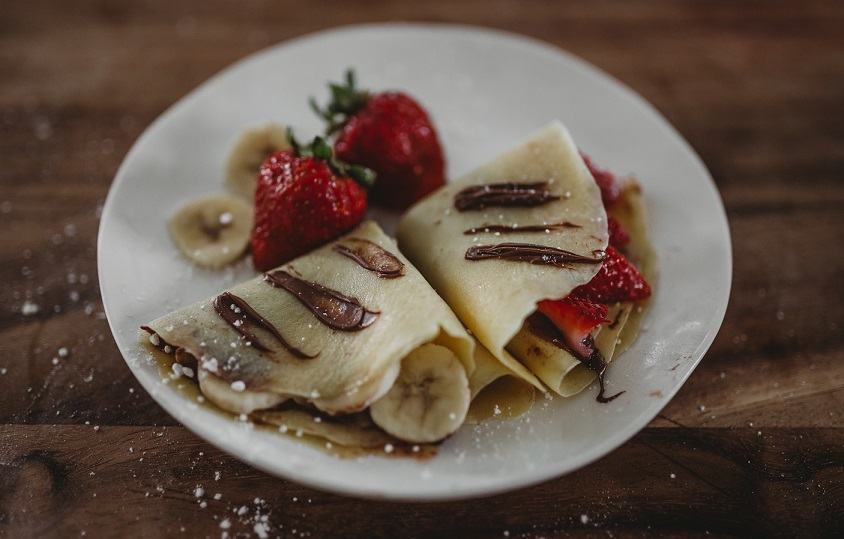

Mes meilleures crêpes

Résumé
La pâte : 10 minutes
Cuisson : 10 minutes
Difficulté : facile,
Budget : €--
Ustensiles
- 1 verre doseur
- 1 saladier
-
1 crêpière ou 1 poêle
- 1 cuillère à soupe
- 1 fourchette ou 1 fouet
Ingrédients
Pour une quinzaine de crêpes environ
- 300g farine
- 600ml de lait
- 3 œufs
- 50g de beurre
- 2 cuillères soupe d'huile
- 3 cuillères soupe de sucre
- 50cl de rhum
Instructions
La pâte
- Mettre la farine dans un saladier et former un puit
- Y déposer les oeufs entiers, le sucre, l'huile et le beurre
-
Mélanger délicatement avec un fouet en ajoutant au fur et à mesure le
lait. La pâte ainsi obtenue doit avoir une
consistance d'un liquide légèrement épais.
- Parfumer de rhum
-
Faire chauffer une poêle antiadhésive et la huiler très légèrement à
l'aide d'un papier Essuie-tout. Y verser une louche de pâte, la
répartir dans la poêle puis attendre qu'elle soit cuite d'un côté
avant de la retourner. Cuire ainsi toutes les crêpes à feu doux.
La cuisson
Idéalement sur une petite crêpière, verser simplement la quantité de
pâte souhaitée. Laisser cuire jusqu'à l'apparition de petites bulles sur
le dessus du pancake puis retourner
À la poêle, même principe à feu doux
Dégustation
Parfait avec un peu de pâte à tartiner, une bonne confiture ou tout
simplement avec un peu de sucre
Astuce : avec des morceaux de banane et du chocolat fondu c'est un régal
!😋